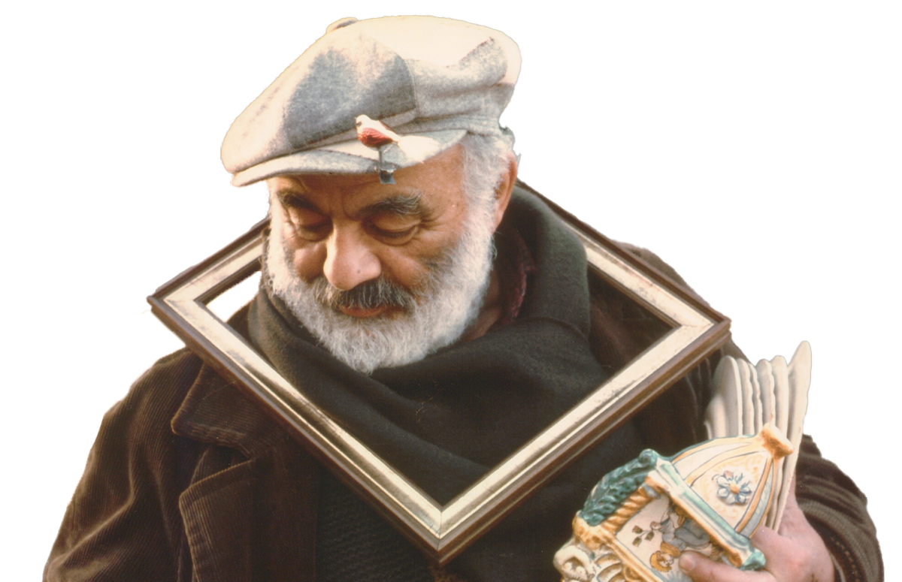
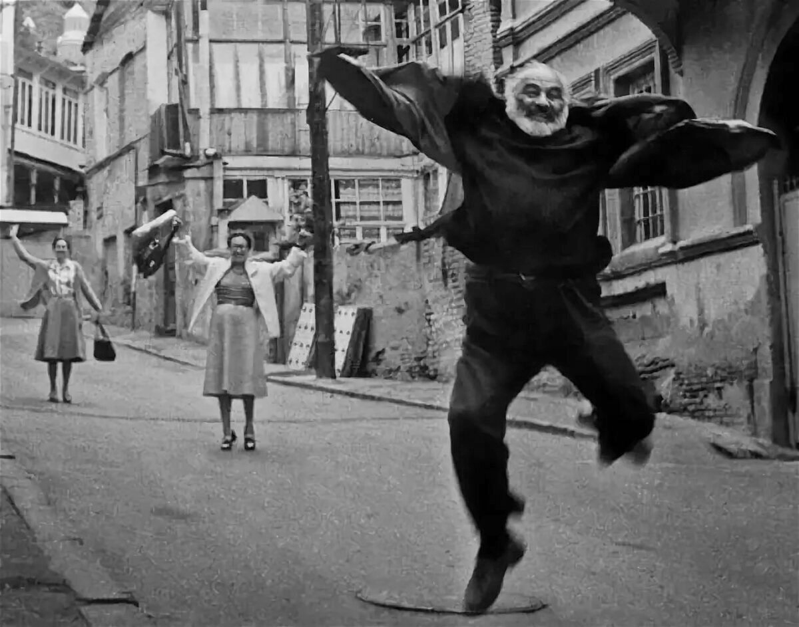
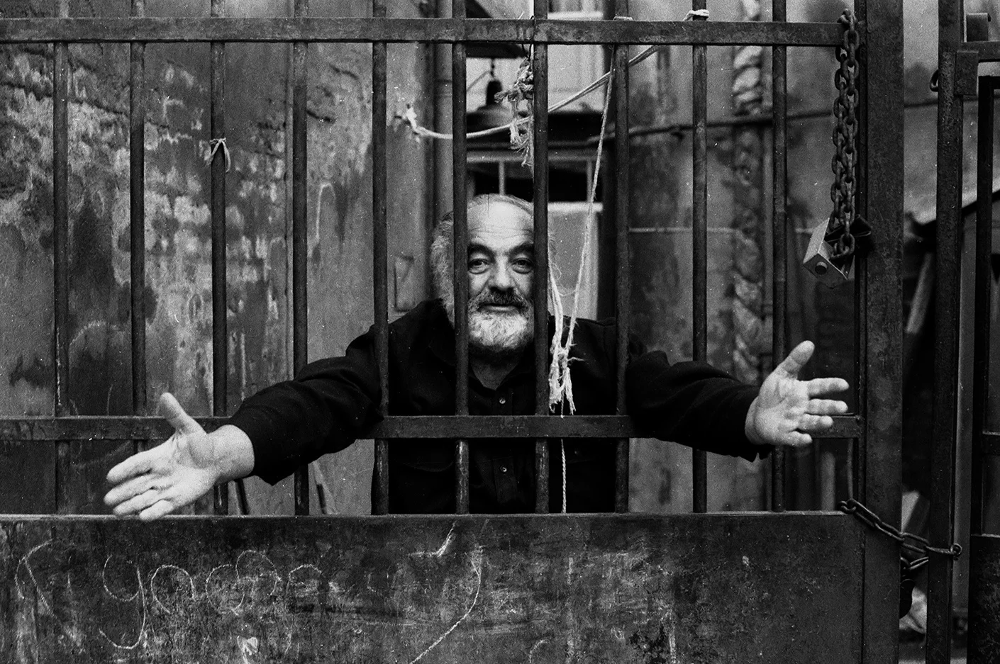
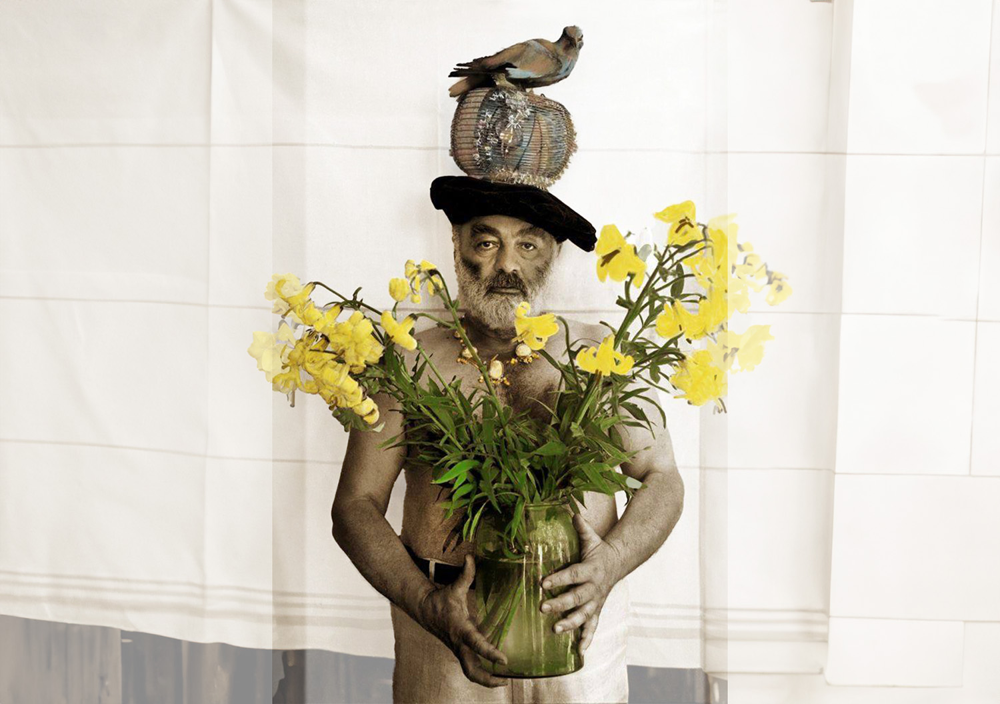
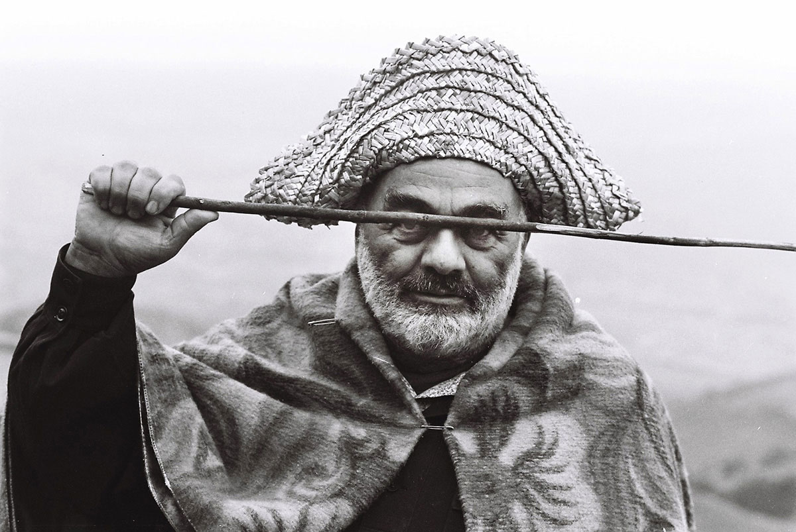
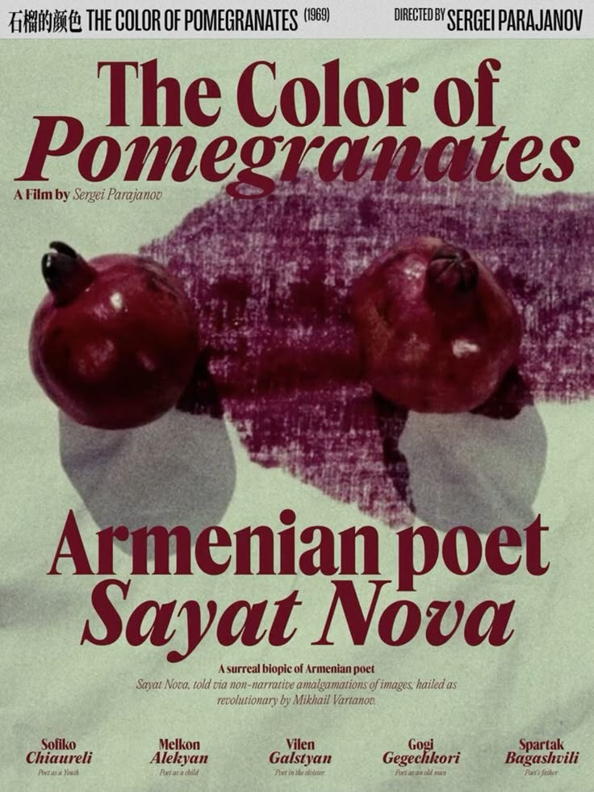

Before 1963 he directed four non-remarkable full-length feature and three short documentary films. In 1964 his «Shadows of Forgotten Ancestors» («Wild Horses of Fire»), brought him world fame. The strange thing about Parajanov's life is the fact that misfortune came only after he became famous. In 1965 he began his work over an anti-war film “Kiev Frescos», which was soon banned. In 1966 Parajanov was invited to Armenia where he started his work on “Sayat-Nova”.

With great difficulties, this film was released on a screen in 1969 under the title “The Colour of Pomegranates”. It is considered to be his best work after which he was deprived of the possibility of making movies for 15 long years.